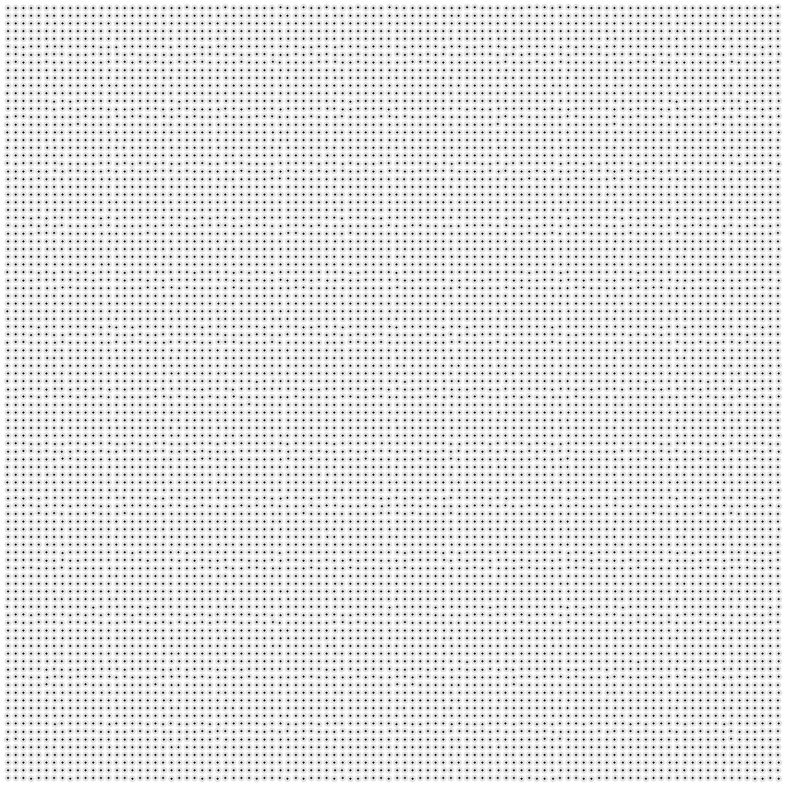
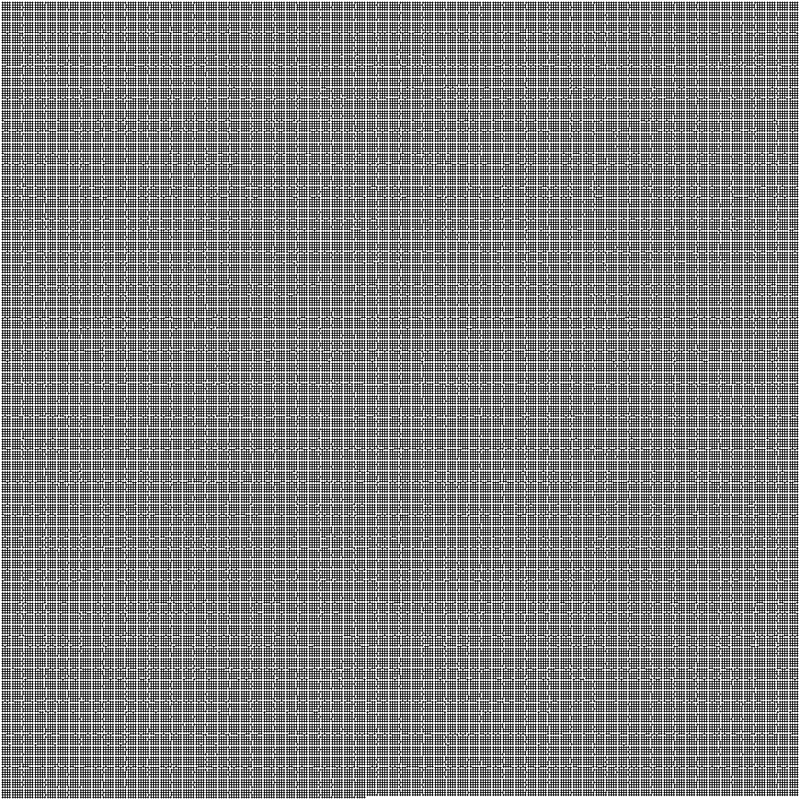

Parallel Particle Simulation
A 2D simulation of particles that push each other away at short range. A spatial grid cuts each timestep from O(n²) to O(n), and OpenMP spreads that work across cores.

The problem
Each particle has a position, velocity and acceleration. Two particles only interact when they are closer than a fixed cutoff distance (0.01). Inside that distance they feel a short repulsive force; outside it, nothing. Every timestep we compute the force on every particle, then move them all and bounce any that cross a wall.
The starter code computes forces the obvious way: for each particle, loop over every other particle.
for (int i = 0; i < num_parts; ++i) {
parts[i].ax = parts[i].ay = 0;
for (int j = 0; j < num_parts; ++j)
apply_force(parts[i], parts[j]); // n × n calls
}That is n² distance checks per step, and almost all of them come back "too far, no force". The particle density is fixed, so each particle only ever has a handful of real neighbors. The goal is to skip the pointless checks.
Serial version: a spatial grid
The box is split into square cells exactly one cutoff wide. If two particles are within cutoff of each other, they must sit in the same cell or in directly adjacent cells. So each particle only has to look at the 3 × 3 block of cells around its own.
Each timestep in serial.cpp does four things:
- Bin. Put each particle's index into the cell it falls in:
cell = floor(x / cutoff) * (m+1) + floor(y / cutoff). - Compute forces. Walk every cell; for each particle in it, zero its acceleration and apply forces from every particle in the 3 × 3 neighborhood (skipping itself and cells outside the box).
- Clear the grid. Empty every cell so the next step can rebin from scratch.
- Move. Integrate velocity and position, and reflect particles off the walls.
// 1. bin
for (int i = 0; i < num_parts; i++) {
x_cell = std::floor(parts[i].x / s);
y_cell = std::floor(parts[i].y / s);
grid[x_cell*(m+1) + y_cell].push_back(i);
}
// 2. forces: each particle vs. its 3x3 neighborhood
for (i = 0; i < m+1; i++)
for (j = 0; j < m+1; j++)
for (int gi : grid[i*(m+1) + j]) {
parts[gi].ax = parts[gi].ay = 0;
for (pi = 1; pi >= -1; --pi)
for (pj = 1; pj >= -1; --pj)
if (/* neighbor cell is inside the grid */)
for (int gj : grid[(i+pi)*(m+1) + (j+pj)])
if (gi != gj) apply_force(parts[gi], parts[gj]);
}Why it is linear
Binning, clearing and moving each touch every particle once: O(n). For forces, the simulation keeps density constant, so the box grows with n and each cell holds about the same small number of particles no matter how big the run is. Every particle therefore checks a roughly constant number of neighbors, and the whole force step is O(n) as well.
The grid is (m+1) × (m+1) with m = ceil(size / cutoff). The extra row and column catch a particle sitting exactly on the far wall, where floor(size / cutoff) would otherwise index one past the end.
Parallel version: OpenMP
openmp.cpp keeps the same four phases and the same grid, and turns each phase into a parallel loop. The question for each phase is: can two threads ever write to the same memory at the same time?
| Phase | Parallelized over | Conflict? | How it is handled |
|---|---|---|---|
| Bin | particles | Yes: two threads may push into the same cell's vector | One omp_lock_t per cell around the push_back |
| Forces | grid rows i | No: a thread only writes ax/ay of particles in its own rows; neighbors are only read | Plain omp for |
| Move | particles | No: each particle is updated independently | Plain omp for, after the barrier ending the force loop |
| Clear | cells | No: each cell is cleared by one thread | Plain omp for |
Binning with per-cell locks
std::vector::push_back is not thread-safe, and two particles handled by different threads can land in the same cell. One lock per cell (created once in init_simulation) serializes only those colliding inserts. Threads inserting into different cells never wait on each other, which is far cheaper than a single global critical section.
#pragma omp parallel for
for (int i = 0; i < num_parts; i++) {
c = x_cell*(m+1) + y_cell;
omp_set_lock(&locks[c]);
grid[c].push_back(i);
omp_unset_lock(&locks[c]);
}Forces and movement in one parallel region
The outer loop over grid rows is split among threads. During the force phase positions are read-only, and each particle's acceleration is written only by the thread that owns that particle's cell, so no locks are needed. The omp for ends with an implicit barrier, so every force is finished before any particle moves. Movement then runs in the same parallel region, which saves the cost of starting a new team of threads.
#pragma omp parallel
{
#pragma omp for
for (i = 0; i < m+1; i++) // rows split across threads
/* same 3x3 force loop as serial */
// implicit barrier: all forces done
#pragma omp for
for (int i = 0; i < num_parts; ++i)
move(parts[i], size);
}
#pragma omp parallel for
for (auto& cell : grid) cell.clear();apply_force calls, but then a thread would write to particles in neighboring rows owned by other threads, which needs atomics or locks. Computing each particle's force independently does a bit more arithmetic and avoids all write contention.
Build and run
mkdir build && cd build
cmake -DCMAKE_BUILD_TYPE=Release ..
make
./serial -n 10000 -s 1 # serial O(n)
OMP_NUM_THREADS=8 ./openmp -n 100000 -s 1 # OpenMPFlags: -n number of particles, -s random seed, -o file to write particle positions to. correctness/correctness-check.py compares an output file against a reference, and render/render.py turns one into an animation.